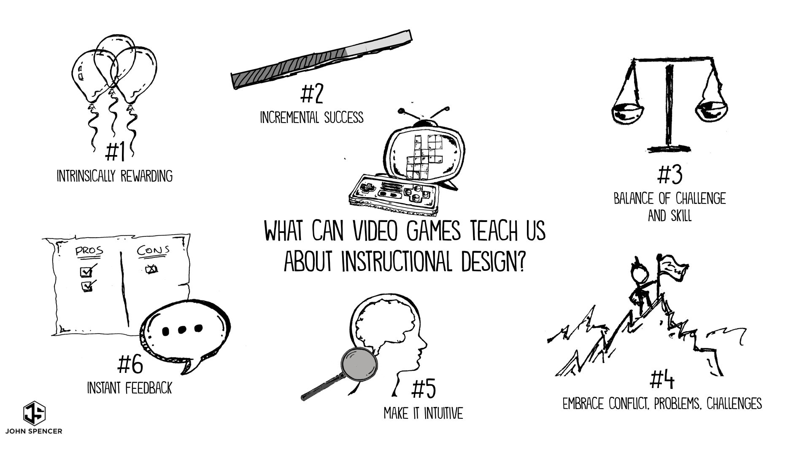

Playing guitar is something very fulfilling for me, it allows me to express what I feel through a song. One of the main courses online I've been learning from has been Justin guitar.
Singing is great to practice while playing guitar and piano, you can really use instruments to match notes and that makes me feel really good about how much control I can have over my voice.

Videogames, were a big part of my childhood. Some RPG's even taught me english when I was a kid back in mexico.
